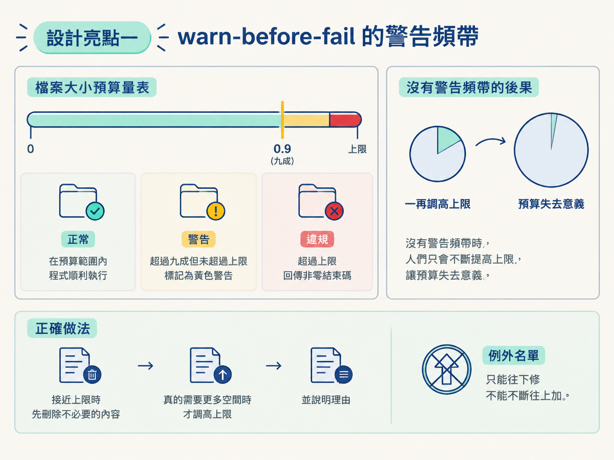
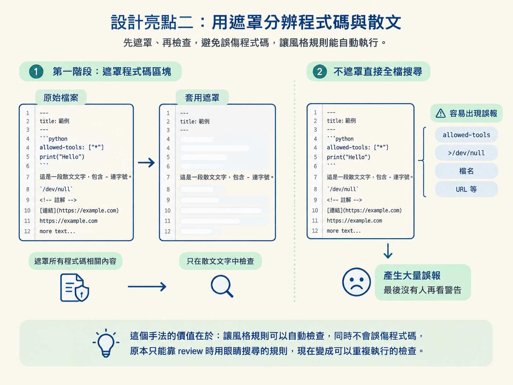

本課會拆解 check-portability 的 11 條規則與 byte budget，並說明 prompt lint 如何透過 warn-before-fail 警告頻帶與 prose masking，讓風格和 token 預算不必再靠人記憶。
前三課已經建立一套設計標準：四條慣例、成本模型、 skill 結構，以及六條撰寫規則。問題是，標準如果只存在文件裡，就像貼在牆上的使用須知，剛開始人人都看，過一陣子就容易被忽略。
有人新增 skill 時忘了加 allowed-tools，有人把「read only」寫成「read-only」，有人為了塞進新功能，悄悄把檔案養到原本的兩倍大。也有人在描述裡放進破折號，卻忘了整套 skill 正在教使用者不要用破折號。
這些錯誤單獨看都不嚴重，但累積之後，會讓整套工作流失去一致性，甚至讓 token 預算變成沒有意義的數字。jsm-skills 的解法很直接：把規則寫成程式碼。
一支零依賴的檢查腳本會掃過所有 skill 檔案。只要違規，CI 就會亮紅燈。這比再寫一份「請大家遵守」的文件可靠得多。本課會拆開這支守門員，看看它檢查哪 11 件事，以及其中兩個值得帶回自己專案的設計手法。
一般軟體專案裡，npm test 通常會執行單元測試。但在這個專案裡，package.json 把 test 直接指向 check，也就是 node scripts/check-portability.mjs。
換句話說，這支慣例檢查腳本就是整個專案的測試套件。
這個安排反映出一個重要判斷：這裡的產品是一組 prompt 檔案，而最容易出問題的地方，正是風格與預算逐漸走樣。因此，防線應該放在「檔案是否遵守約定」上，而不是只測試某段傳統程式碼能不能執行。
腳本只使用 Node 標準函式庫，沒有額外套件。CI 甚至不必先執行 npm install，直接跑檢查即可。
11 條規則乍看分散，其實可以整理成三個主題：跨工具可攜性、預算，以及風格一致性。
SKILL.md 的 frontmatter 都要有 allowed-tools。這個欄位宣告 skill 可以使用哪些工具，讓不同客戶端知道該開啟哪些權限。model: "haiku" 這類固定指定。原因很實際：如果沒有明確指定模型，subagent 通常會繼承主 session 使用的模型，而主 session 往往是較昂貴的等級。正確做法是用角色描述，例如「使用一個快速且低成本的模型」，把各家工具的模型別名只放在不引號的範例裡。>/dev/null、&& BASE= 這些寫法，只在類 Unix 環境成立。git 指令本身沒有問題，真正有風險的是那些依賴特定 shell 的花招。分支選擇邏輯應該用文字說明，不要硬塞進 shell 表達式。agents/openai.yaml。檔案必須包含 interface:、display_name:、short_description:、default_prompt: 四個欄位，作為其他客戶端的介面轉接層。allowed-tools 要寫 Agent，不能寫舊的 Task。Claude Code 已將 subagent 工具從 Task 改名為 Agent，舊名稱只為相容性保留。既然要宣告工具，就應該宣告目前真正使用的名稱。<!-- NAME:START --> 標記框住共用區塊，再逐字比對。只要有人只改了其中一邊，就會報錯。SKILL.md 本文上限是 32 KB，支援檔案上限是 24 KB。少數歷史檔案則列在例外名單裡。description 不超過 400 個字元。這段文字在整個專案裡出場次數最多，每個 session 都會載入，因此最該保持精簡，也會一併套用規則 10 的破折號禁令。這支腳本有一個很值得借用的設計：WARN_AT 設為 0.9。檔案只要使用到預算的九成以上，雖然還沒有超標，就會先被列為警告。
每次執行時，腳本都會印出各條路徑的使用率。超過九成的路徑會在報表中被點名；真正超過上限的項目才會列為違規，並讓程式回傳非零結束碼。
為什麼要在「還沒壞」時就提醒？如果預算上限剛好貼著目前的使用量，每次正常編輯都可能踩線。工程師最後通常只剩一個選項：把上限調高。
一旦開始不斷抬高上限，預算就不再反映真實需求，只剩一張好看的裝飾。保留一段警告頻帶，則能讓「正在變胖」的檔案在還容易處理時就被看見。
實際原則是：接近上限時，先刪掉不必要的內容；真的需要更多空間時，才調高上限，並且說明理由。例外名單只能往下修，不能不斷往上加。

規則 10 和規則 11 要求敘述裡不能有破折號與連字號。但程式碼中到處都是連字號，例如 allowed-tools、>/dev/null、檔名與 URL。
如果腳本不分內容類型，直接搜尋整個檔案，就會產生大量誤報。警告一多，最後大家反而不再看警告。
腳本採用的解法是「先遮罩，再檢查」。它會把下列內容用空白蓋掉：
遮罩時會保留原本的長度，因此行號不會跑掉。完成遮罩後，仍然留在文字裡的連字號單字，就可以視為散文內容，應該被改寫。
少數例外則用固定清單處理，例如 in-progress、gap-fill、whole-repo、Follow-up、pre-flight。這些是 skill 彼此匹配時使用的具名值，例如 phase 名稱或 section 標題。改掉它們，就不只是修改文案，還需要同步遷移所有 skill，因此允許保留。
這個手法的價值在於：它讓風格規則可以自動檢查，同時不會誤傷程式碼。原本只能靠 review 時用眼睛搜尋的規則，現在變成可以重複執行的檢查。

規則要真正生效，就必須接進日常流程。本機端由 npm run check 執行完整檢查；npm run tokens 則負責執行上一課介紹的唯讀 token 分析工具，用來查看一次 session 的成本花在哪裡。
CI 端則由 .github/workflows/check.yml 負責。在 push 到 main，以及每個 pull request 時，流程會使用 ubuntu、安裝 Node 20，再執行 npm run check。因為腳本零依賴，所以不需要額外的套件安裝步驟。
把這三條線接起來看：
任何人想修改 skill，都必須先通過這道守門員。風格與預算因此由流程把關，不必期待每個人都記得所有規則。
把 prompt 當成產品，把慣例當成測試，是這個專案的核心手法。檢查腳本零依賴，只掃描skills/下的所有 markdown；只要違規，就回傳非零結束碼。11 條規則分成三組：跨工具可攜性，包括allowed-tools、模型別名、工具命名、PowerShell 相容性、openai 轉接、Agent正名，以及共用區塊逐位元一致；預算，包括單檔 32/24 KB 與熱路徑總量；風格，包括description400 字元上限、禁止破折號，以及散文不得使用連字號。兩個關鍵手法是：保留九成使用量的警告頻帶，讓內容變胖時能及早被看見；以及先遮罩程式碼，再檢查散文，避免風格規則誤傷程式碼。
到這裡，你已經完成 Tier 1 的最後一塊拼圖：從四條慣例、成本模型、skill 結構，一路走到可執行的檢查。接下來進入 Tier 2，逐階段拆解九個 skill 的操作規則。
現在你已經有了設計視角。閱讀那些規則時，可以直接追問每一句為什麼存在，以及哪些內容真的可以拿掉。